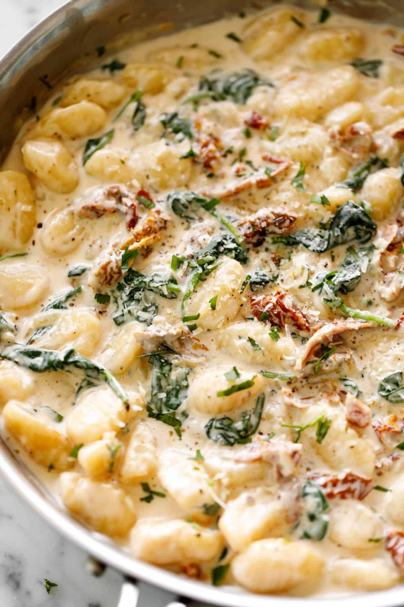

Tuscan Gnocchi

Description
This deliciously Creamy Tuscan Gnocchi will become your new favorite pasta dish.
Soft, tender pillows of gnocchi enveloped in a full-flavoured cream sauce with sun-dried tomatoes,
garlic, spinach, parmesan and fresh basil.
All cooked in one pan!
The ultimate comfort food! Even if you don't particularly like creamy sauces,
you will fall head-over-heels for this one pan gnocchi recipe.
Quick and easy to make, ready on the table in less than 15 minutes
Ingredients
- 2 tablespoons butter or olive oil
- 1 brown shallot chopped or 1 small onion
- 4 cloves garlic minced
- 1 pound uncooked potato gnocchi the dry packaged gnocchi - not fresh
- ½ cup sun dried tomato strips in oil jarred, reserve 2 teaspoons of the jarred oil for cooking
- ½ cup chicken broth
- 1 ¼ cups heavy cream thickened cream
- 1 teaspoon dried Italian herbs
- 1 pinch salt to taste
- 1 pinch pepper to taste
- 1 ½ cups fresh baby spinach
- ½ cup parmesan cheese fresh grated
- 2 tablespoons fresh chopped basil or parsley
Steps
- Heat a large skillet over medium-high heat. Melt the butter and sauté shallots until transparent, about 2 minutes. Sauté garlic until fragrant, about 30 seconds.
- Add the gnocchi and let sear in the butter for a minute. Add the sun dried tomatoes and reserved oil. Cook for a further minute to release flavours into the gnocchi.
- Pour in the chicken broth, cream and Italian herbs. Scrape up any browned bits from the bottom of the pan.
- Season with salt and pepper to taste. Mix everything together and reduce heat to medium. Cover pan with lid and let cook for 5 minutes.
- Stir in the spinach leaves and cook until wilted, about 1 minute.
- Stir through parmesan cheese and chopped basil. Let simmer for a further minute or until gnocchi is soft, cooked through and the sauce has thickened to your liking.
- Season with a little extra salt & pepper, if needed, to suit your taste.
- Serve immediately